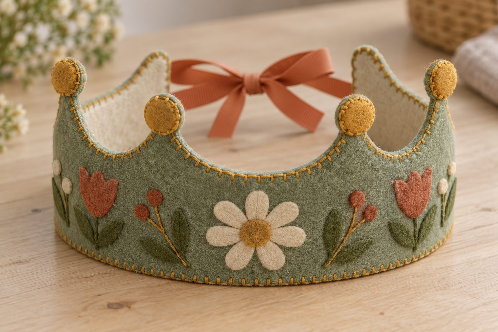
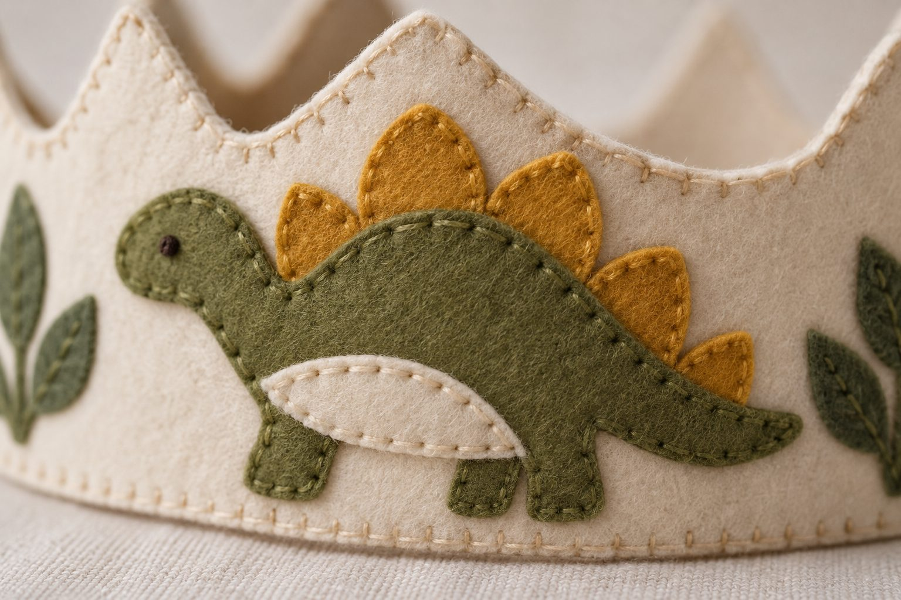

Hol kezdd
- Nyomtasd ki a nyomtatási próbát, és mérd meg vonalzóval: a négyzet legyen pontosan 10 × 10 cm.
- Olvasd át a képes útmutatót. Tíz oldal, és utána tudni fogod, mit csinálsz.
- Válassz egy koronaformát és egy témát, és csak azt a néhány lapot nyomtasd ki. Nem kell az egészet.
- Vedd meg a kellékeket az anyaglista szerint, és kezdd a szabással.
Először ezt nyomtasd ki
Egy lap, rajta egy 10 × 10 cm-es négyzet és két vonalzó. Ezzel ellenőrzöd, hogy a nyomtatód valódi méretben nyomtat-e. Ha ez stimmel, minden más is jó lesz. Két percet vesz el, és megspórol egy rossz koronát. A csomagban minden lap álló A4, egyetlen tájolás: nyomtatáskor 100 %, „Valódi méret”, és ne kapcsold be az „automatikus forgatás és középre igazítás” opciót.
5 koronaforma, eredeti méretben
Mind az öt 45 cm hosszú, és mindegyiket a két hátsó szalaggal állítod be, babától felnőttig. Válassz egyet. Ha most varrsz először, az íves a legkönnyebb.
Szám- és betűsablon
A számok 0-tól 9-ig, 7 cm magasan, és a teljes ábécé 3,4 cm-es nagybetűkkel. Ezekkel teszed személyessé a koronát.
16 témás sablon
Mind a 16 témához négy oldal jár: színes sablonoldal, ugyanaz fekete-fehérben (átrajzoláshoz), egy elrendezési példa, és egy referenciakép a kész koronáról.
- Dinoszauruszok · témás sablon4 oldal · PDF
- Sellők · témás sablon4 oldal · PDF
- Tengeri állatok · témás sablon4 oldal · PDF
- Tündérek · témás sablon4 oldal · PDF
- Unikornisok · témás sablon4 oldal · PDF
- Kalózok · témás sablon4 oldal · PDF
- Űr · témás sablon4 oldal · PDF
- Eper · témás sablon4 oldal · PDF
- Autók és teherautók · témás sablon4 oldal · PDF
- Munkagépek · témás sablon4 oldal · PDF
- Repülők · témás sablon4 oldal · PDF
- Vonatok · témás sablon4 oldal · PDF
- Virágok · témás sablon4 oldal · PDF
- Nap és felhők · témás sablon4 oldal · PDF
- Erdei állatok · témás sablon4 oldal · PDF
- Szülinapi asztal · témás sablon4 oldal · PDF
4 oldal évszakos motívum
Tavasz, nyár, ősz és tél – válaszd azt, amelyik a szülinap hónapjához illik.
Gyertya, lufi és állítható számsablon
Gyertyák és lufik eredeti méretben, és egy táblázat, amivel a számot öt különböző méretben nyomtathatod ki ugyanarról a lapról.
Lépésről lépésre, képes útmutató
A nyomtatástól a megkötött szalagig, 10 oldalon. Benne a három alapöltés lerajzolva: fűzőöltés, huroköltés és pelenkaöltés.
Színpárosítás és elrendezés
Melyik szín melyikkel, és hol legyen a koronán: mind a 18 filcszín eredeti méretű mintával, nyolc kész összeállítás, öt elrendezési változat és egy tervezőlap.
Tiszta szélek: befejező öltések
A korona szélén fut körbe az egyetlen öltéssor, amit mindenki lát. Kezdés csomó nélkül, lezárás, csúcsok és völgyek, fonalcsere, a szalag rögzítése és három szélváltozat – ugyanabból a három alapöltésből.
Anyaglista, boltokkal együtt
Mi kell, mennyi, és melyik magyar webáruházban veszed meg. A linkek kattinthatók, és egyesével ellenőriztük őket.
Referenciaképek a kész koronáról
Nézd meg közelről, milyen sűrűn mennek az öltések, hogyan fekszik egymásra két darab, és hogyan van befogva a szalag a két réteg közé. Mind a 16 témához tartozik egy saját referenciakép is, a témás sablon 4. oldalán.




Következő lépés
Nyomtasd ki a nyomtatási próbát, mérd meg a négyzetet, és válassz egy koronaformát. Ennyi az egész első lépés.